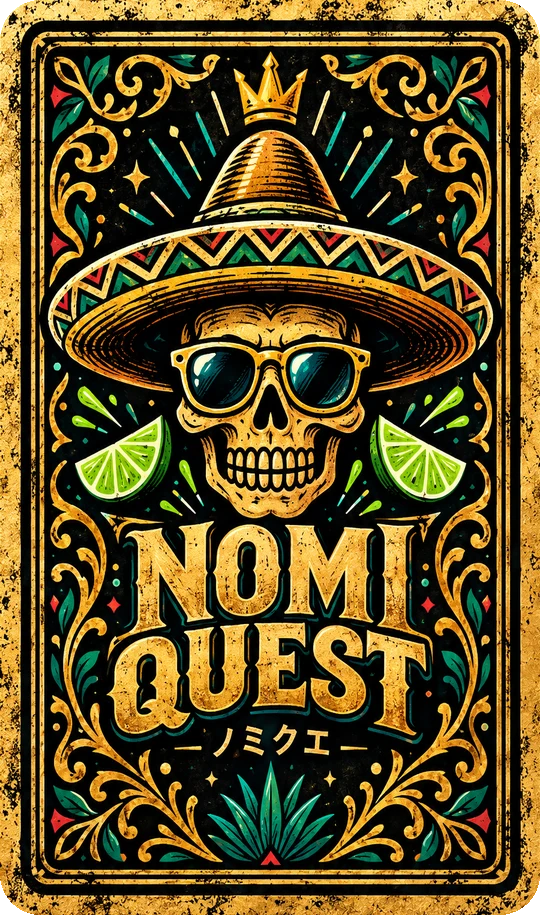

NOMIQUEST

お酒を飲みながら、スマホでカードを引いて遊ぶ飲み会ゲーム。
2〜6人で、同じ部屋に入って始めます。
🍻 ゲームの部屋に招待されました。
ニックネームを入れて参加しよう。
ニックネームを入れてね
前の部屋が保存されています。ホームに戻っても参加情報は残ります。
ほかのスマホなしで、ひとりで試せます。通信しないので記録は残りません。
🍻 おつかれさま！
このゲームをスマホに登録しますか？
次の飲み会でも、ホーム画面からすぐ遊べます。
iPhone：Safariの共有ボタン □↑ →「ホーム画面に追加」を押してください。
みんなの待合室
メンバー・部屋の操作
通信試作です。12枚のカード、個人DRINK、お助け（バリア・天使・可愛い）が遊べます。残りのカードは次の工程です。